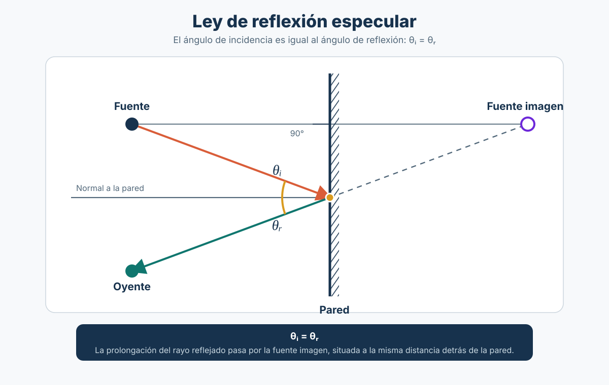

Sesión 12: Aire, suelo y reflexión del sonido¶
Pregunta central: cuando escuchamos un sonido, ¿qué puede ocurrir durante su recorrido?
Objetivo: comprender tres fenómenos de propagación con ejemplos sencillos, antes de realizar una prueba integradora de los conocimientos estudiados.
1. ¿Por qué modelar el sonido como rayos?¶
Podemos dibujar flechas o líneas para representar el camino que recorre el sonido. A esas líneas las llamamos rayos sonoros.
Este modelo es útil para visualizar hacia dónde viaja y dónde se refleja el sonido, especialmente cuando las superficies son grandes comparadas con su longitud de onda. No significa que el sonido sea literalmente un rayo: sigue siendo una onda.
El sonido se refleja¶
Si un rayo sonoro llega a una pared lisa y rígida, podemos representar su rebote como el de una pelota sobre una superficie:
- Incidencia: el rayo llega a la pared.
- Reflexión: el rayo sale después de rebotar.
- Normal: línea perpendicular a la pared. Los ángulos se miden desde la normal, no desde la superficie.
Ejemplo: si el sonido llega con un ángulo de 30° respecto a la normal, sale con otro ángulo de 30° en la reflexión especular ideal.

2. Absorción atmosférica: ¿qué hace el aire?¶
Al recorrer grandes distancias, el aire absorbe parte de la energía sonora.
- Generalmente, la absorción acumulada resulta más importante en los agudos que en los graves.
- Su magnitud depende de la frecuencia, la temperatura, la humedad y las condiciones atmosféricas.
- No es lo mismo que la divergencia geométrica de la sesión 9: al alejarnos, la energía se distribuye sobre un área mayor y el nivel disminuye.
Ejemplo: un sonido muy lejano puede tener menos brillo que uno cercano. No toda esa diferencia se debe necesariamente a la absorción del aire: también influyen las fuentes, el entorno y la directividad.
3. Efecto del suelo: ¿por qué puede cambiar el sonido?¶
El suelo también puede reflejar sonido. Por eso, un oyente puede recibir dos contribuciones:
- Sonido directo: llega desde el parlante.
- Sonido reflejado: rebota en el suelo antes de llegar.
Cuando ambas ondas se encuentran, pueden reforzarse o cancelarse parcialmente dependiendo de la frecuencia, la diferencia de recorridos y las características del suelo.
Ejemplo: un suelo duro suele reflejar más sonido que uno poroso, pero no podemos afirmar que la reflexión siempre aumentará el nivel.
4. Demostración visual: los tres fenómenos¶
En esta actividad solo observaremos qué hace el aire, qué hace el suelo y cómo se refleja un rayo sonoro. Los esquemas son ilustrativos y no representan mediciones reales.
🎛️ Abrir demostración en pantalla completa
En tres frases¶
| Fenómeno | Qué recordar |
|---|---|
| Divergencia geométrica (sesión 9) | Al alejarnos de una fuente aproximadamente puntual, disminuye el nivel. |
| Absorción atmosférica | El aire añade pérdidas que dependen de la frecuencia y las condiciones atmosféricas. |
| Efecto del suelo y reflexión | El sonido puede llegar por caminos distintos y producir refuerzos o cancelaciones. |
5. Prueba integradora de conocimientos¶
La parte principal de esta sesión se dedica a una evaluación individual de los contenidos estudiados hasta la sesión 11.
Duración sugerida: 60–70 minutos.
Aspectos que debes dominar: naturaleza y parámetros del sonido, frecuencia y longitud de onda, timbre y espectro, decibelios, niveles sonoros, suma de niveles, directividad, propagación con la distancia y factores que influyen en exteriores.
Materiales: calculadora y útiles de escritura, según las indicaciones del docente.
Las preguntas se entregarán durante la evaluación y no se publican en esta página.
6. Repaso posterior a la prueba: RMS, dBA y dBFS¶
En la prueba aparecieron tres conceptos que conviene diferenciar: RMS, dBA y dBFS. Se utilizan en audio y acústica, pero no significan lo mismo.
6.1. RMS: ¿cuál es el valor eficaz de una señal?¶
RMS viene de Root Mean Square (raíz cuadrática media). Es una forma de calcular el valor eficaz de una señal que varía en el tiempo. No es una unidad como los pascales o los decibelios.
Una onda sinusoidal oscila entre valores positivos y negativos. Si hacemos el promedio simple de una sinusoide completa, obtenemos cero; sin embargo, eso no significa que la señal no tenga energía. El cálculo RMS evita esa cancelación: eleva los valores al cuadrado, calcula su promedio y obtiene la raíz cuadrada.
Para una sinusoide:
Ejemplo: si una sinusoide tiene amplitud de pico de 1, su valor RMS es aproximadamente 0,707 (en las mismas unidades de amplitud).
| Concepto | ¿Qué indica? | Utilidad |
|---|---|---|
| Peak (pico) | La amplitud máxima alcanzada. | Vigilar los picos y evitar la saturación digital. |
| RMS (eficaz) | El valor eficaz de la señal durante un intervalo. | Comparar niveles de señal y calcular la presión sonora eficaz. |
Conexión con la acústica: para calcular el nivel de presión sonora (dB SPL) se utiliza la presión eficaz o RMS, expresada en pascales.
Para imaginarlo
Un golpe de caja puede alcanzar un pico alto y durar muy poco; una nota de órgano sostenida puede tener un nivel RMS elevado aunque su pico no sea tan alto. El valor RMS depende también del intervalo analizado.
6.2. dBA: ¿por qué no medimos todas las frecuencias de la misma manera?¶
Los dB SPL expresan el nivel de presión sonora con referencia a 20 µPa en aire. Al aplicar la ponderación A, el instrumento modifica la contribución de cada frecuencia antes de calcular el nivel: el resultado se expresa en dBA.
La ponderación A atenúa especialmente las frecuencias graves y aproxima de forma simplificada ciertos aspectos de la sensibilidad del oído humano. No equivale a medir directamente qué tan fuerte percibe una persona un sonido, ni reemplaza las curvas de igual sonoridad que veremos en la sesión 12B.
Ejemplo ilustrativo con tonos puros: si ambos producen 80 dB SPL, la ponderación A arroja aproximadamente:
| Frecuencia del tono | Nivel sin ponderación | Nivel con ponderación A |
|---|---|---|
| 100 Hz | 80 dB SPL | 61 dBA |
| 1.000 Hz | 80 dB SPL | 80 dBA |
La diferencia aparece porque la ponderación A aplica cerca de −19 dB a 100 Hz y 0 dB a 1.000 Hz. No se debe restar siempre una cantidad fija a los dB SPL: depende del contenido en frecuencias de cada sonido.
Aplicación: un sonómetro configurado en dBA permite evaluar niveles de ruido ambiental con un criterio de ponderación frecuencial estandarizado. Para analizar el contenido grave de un sonido, puede ser necesario utilizar otras mediciones.
6.3. dBFS: ¿qué mide el medidor de Ableton Live?¶
dBFS significa decibels relative to full scale: decibelios relativos a la escala completa del audio digital.
- 0 dBFS indica la referencia máxima de amplitud de la escala digital convencional.
- −6 dBFS, en un medidor de pico, significa una amplitud aproximadamente igual al 50 % del máximo digital.
- El silencio digital ideal equivale a un nivel de −∞ dBFS.
Ejemplo en Ableton Live: si el medidor de una pista marca −6 dBFS de pico, está mostrando el nivel de la señal digital, no el nivel de presión sonora que llega a nuestros oídos. Ese sonido podría reproducirse a niveles acústicos muy distintos según el volumen de salida, la interfaz, el amplificador, los parlantes y la distancia.
Error frecuente en la prueba
−6 dBFS no equivale a −6 dB SPL. Los dBFS usan una referencia digital y los dB SPL una referencia física de presión. Para relacionarlos hace falta conocer y calibrar toda la cadena de reproducción.
6.4. Comparación y comprobación rápida¶
| Término | Pregunta que responde | Ejemplo de uso |
|---|---|---|
| RMS | ¿Cuál es el valor eficaz de la señal? | Presión RMS para calcular dB SPL; nivel eficaz en audio. |
| dBA | ¿Cuál es el nivel acústico tras aplicar ponderación A? | Ruido de una sala medido con un sonómetro. |
| dBFS | ¿A qué nivel está la señal respecto al máximo digital? | Medidor de una pista en un DAW. |
Comprueba que quedó claro:
- Una sinusoide de amplitud pico 2 tiene RMS de aproximadamente 1,414. ¿Por qué no es 2?
- Dos tonos de 80 dB SPL, uno grave y otro de 1.000 Hz, ¿tienen necesariamente el mismo valor en dBA?
- Si Ableton Live indica −6 dBFS, ¿podemos conocer los dB SPL que escucha el público sin medir la reproducción?
Respuestas: 1) porque RMS es el valor eficaz, no el máximo; 2) no, la ponderación A depende de la frecuencia; 3) no, falta conocer y calibrar el sistema de reproducción.
7. Video y práctica autónoma: diseñar el tratamiento de tres salas¶
Modalidad: actividad individual o en equipos, desde casa. El objetivo no es medir una sala real sino calcular, visualizar y justificar los puntos de primeras reflexiones de un espacio representado en un plano.
7.1. Video de referencia¶
Audio University — Acoustic Treatment for Beginners: Studio Sound Optimization (6 min 58 s). Observa el recorrido directo y reflejado, la interferencia entre ambos y la técnica del espejo que permite reconocer las zonas donde situar tratamiento.
Momentos recomendados: 0:15 (sonido directo y reflejado), 0:46 (interferencia), 2:20 (primeras reflexiones), 4:10 (técnica del espejo) y 6:20 (comparación auditiva).
7.2. Tres planos para resolver¶
Se han preparado tres espacios hipotéticos con dimensiones, alturas y posiciones de monitores y oyente distintas. Cada estudiante puede trabajar con uno; si se organiza por equipos, puede asignarse un plano diferente a cada grupo.
| Espacio | Dimensiones (ancho × largo × alto) | Particularidad |
|---|---|---|
| A. Estudio doméstico | 3,60 × 4,80 × 2,55 m | Escucha centrada y sala pequeña. |
| B. Sala de producción | 6,40 × 8,00 × 3,20 m | Sala más amplia y monitores más separados. |
| C. Sala de posproducción | 4,70 × 6,20 × 2,85 m | Escucha desplazada hacia un lateral. |
📐 Ver e imprimir los tres planos completos
Cada plano presenta el tamaño de las cajas, la distancia desde el frente, la altura de montaje y las coordenadas del oyente. Los planos no contienen las respuestas: los puntos de los paneles deberán determinarse en la actividad.
7.3. Simulador 3D: primeras reflexiones y paneles¶
Con el diseñador p5.js debes introducir manualmente las medidas del plano asignado en un formulario inicialmente vacío. No hay casos precargados: los datos de los planos A, B y C deben transcribirse uno a uno. Después podrás visualizar en 3D navegable el espacio, los monitores, el oyente, las rutas del sonido y las zonas estimadas de tratamiento en pared izquierda, pared derecha y techo. Arrastra para girar el modelo y acerca o aleja con la rueda.
🎛️ Abrir simulador 3D en pantalla completa
Cómo interpretar el programa: el plano usa X = distancia desde pared izquierda, Y = distancia desde pared frontal y Z = altura sobre el suelo. El punto de reflexión es donde una trayectoria especular rebota en una superficie antes de llegar al oyente.
Qué permite y qué no permite calcular
El simulador utiliza geometría de reflexión especular, equivalente al método de la fuente imagen. La posición y las dimensiones de las cajas ayudan a estimar su centro emisor, pero no permiten conocer su directividad real. Las áreas de paneles de 0,60 × 1,20 m son referencias visuales, no una recomendación definitiva de tamaño, espesor o materiales. No se calculan RT60, modos de sala ni absorción por frecuencia.
7.4. Práctica para Classroom: introducir los planos y ubicar los paneles¶
Objetivo: interpretar un plano de sala, introducir correctamente sus medidas y proponer la ubicación de paneles para las primeras reflexiones.
Procedimiento:
- Revisa el plano asignado (A, B o C). Identifica el ancho, largo y alto de la sala, las posiciones de ambos monitores, las dimensiones y altura de sus cajas y la ubicación de los oídos del oyente.
- Introduce manualmente los valores. Abre el simulador 3D y escribe en cada campo los datos que aparecen en tu plano. No debes utilizar configuraciones precargadas. Revisa que estén correctos y toma la primera captura de pantalla con los campos completados.
- Obtén la propuesta de paneles. Observa la sala 3D y las coordenadas que devuelve la herramienta. Registra los seis puntos de primera reflexión (dos monitores × pared izquierda, pared derecha y techo). Toma una segunda captura donde se distingan el modelo 3D y las ubicaciones de los paneles; también puedes anexar una captura de la tabla de resultados.
- Comprueba un cambio. Modifica manualmente únicamente la posición Y del oyente, desplazándola 0,50 m hacia la pared posterior. Explica cómo cambia la ubicación de los puntos de reflexión. Recupera el valor original del plano para la entrega principal.
- Justifica tu diseño. Explica por qué colocarías paneles en las zonas señaladas por la herramienta. Relaciona su ubicación con la técnica del espejo del minuto 4:10 del video e identifica una limitación del modelo.
Tabla de resultados:
| Superficie | Monitor izquierdo (m) | Monitor derecho (m) | ¿Dónde colocarías paneles? |
|---|---|---|---|
| Pared izquierda | Y = …; Z = … | Y = …; Z = … | |
| Pared derecha | Y = …; Z = … | Y = …; Z = … | |
| Techo | X = …; Y = … | X = …; Y = … |
Entrega en Classroom: un solo documento con el plano asignado y dos capturas obligatorias:
- Captura 1 — Datos ingresados: debe evidenciar las dimensiones y posiciones escritas por el estudiante en el simulador.
- Captura 2 — Resultado: debe mostrar la sala en 3D con la propuesta de paneles.
Añade la tabla de coordenadas y una explicación de 5 a 8 líneas sobre el criterio de ubicación y el efecto de mover al oyente. Si la tabla de coordenadas no resulta legible en la captura 2, incluye una tercera captura.
Alcance del ejercicio
El simulador utiliza un modelo especular idealizado y propone áreas orientativas de cobertura; no calcula automáticamente el rendimiento real de paneles ni su espesor óptimo. Una instalación real requiere evaluar también las superficies y las propiedades acústicas de los materiales.
Continuación: clase 12B — Psicoacústica
Después de estudiar cómo se propaga el sonido, exploraremos cómo lo percibimos: Sesión 12B — ¿Escuchamos igual todas las frecuencias?. Incluye una práctica auditiva interactiva sin micrófono de medición.
Para cerrar: un modelo nos ayuda a entender el sonido, pero las mediciones reales también dependen del ambiente, de la fuente y del instrumento utilizado.
Lectura opcional: Everest, F. A. y Pohlmann, K. C. (2009). Master Handbook of Acoustics, 5.ª ed.